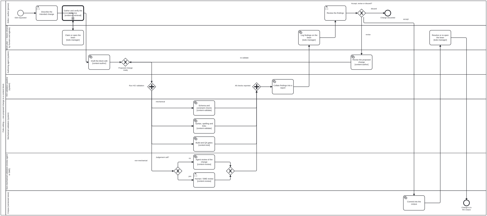
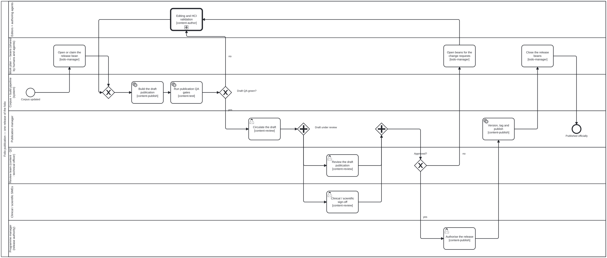
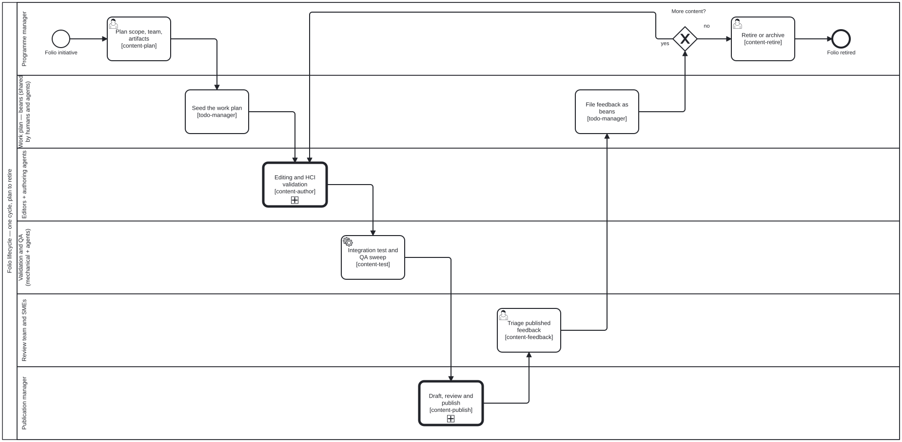

Publication workflow
How a change gets from an editor had an idea to the folio is officially published — expressed as BPMN 2.0 swimlane diagrams, with the roles, the validation gate, the skills, and the shared work plan all named.
- Every workflow in the repo
- Editing and the HCI validation gate
- From corpus to published folio
- Content lifecycle overview
- The work plan — tasks as beans
- Who is who
- Changing these diagrams
- See also
Every workflow in the repo
Six BPMN 2.0 files, all under
docs/workflows/.
Each is a real BPMN 2.0 document with diagram interchange — open it in
bpmn.io, Camunda Modeler, or any BPMN tool. The SVGs
throughout the docs are generated from these files by bun run render:bpmn;
never hand-edit an SVG.
Content-agnostic — these three apply to every folio, and the outer ones reference the inner ones as call activities, so each process is described once and reused:
| Level | Diagram | Answers |
|---|---|---|
| 1 | Content lifecycle — content-lifecycle.bpmn |
One cycle of a folio, plan → retire |
| 2 | Draft → publication — draft-to-publication.bpmn |
How the corpus becomes an officially published folio |
| 3 | Editing & HCI validation — editing-hci-validation.bpmn |
What happens to one proposed change to one content block |
Content-type specific — how a particular kind of folio is authored. These
sit inside level 3’s Draft the block edit, and live with their guides:
| Diagram | Content type | Where it is shown |
|---|---|---|
authoring-a-paper.bpmn |
Scientific papers & books | Writing a paper |
l2-dak-authoring.bpmn |
WHO SMART Guidelines DAK (L2) | Authoring a WHO SMART DAK |
l3-fhir-pipeline.bpmn |
WHO SMART Implementation Guide (L3) | Authoring a WHO SMART IG |
They also run
Since bean fq0b these files are not only pictures. The MCP server interprets
them: workflow_start opens an instance for a subject, workflow_next reports
what is enabled now — with the lane that performs it and the skill that
implements it — and workflow_complete refuses a step the process has not
reached. Commit into the corpus cannot be reported done before the editor’s
decision is recorded, because there is no token on it until then.
That is ordering, not enforcement: nothing yet stops an agent calling a capability tool directly. The case for making it binding — and the argument that the commit boundary is the right place — is in Proposal: workflow orchestration.
Some decisions are computed, not judged
Ten exclusive gateways sit across the six diagrams, and they are not all the
same kind of question. Accept, revise or discard? is the editor’s call.
Build green, no sorries? is arithmetic over lean_build and proof_status.
A gateway carrying <folio:decision ref="decisions/x.dmn#Decision_Id"/> has its
outcome computed from a DMN decision table under
docs/workflows/decisions/.
The agent supplies facts — { failCritical: 0, failMajor: 2 } — and the table
returns the branch; workflow_complete refuses a hand-supplied outcome there,
and records which rule fired.
| Gateway | Table | Reads |
|---|---|---|
Build green, no sorries? |
lean-build-gate.dmn |
buildOk, deferredSorries |
Draft QA green? |
draft-qa-gate.dmn |
failCritical, failMajor |
QC clean? and FHIR valid? are equally mechanical and equally deserve
tables — they wait on a WHO/FHIR adapter, because a table keyed to facts no
tool emits looks authoritative and is not.
The base processes are strict
The three content-agnostic diagrams — editing, draft-to-publication, lifecycle —
carry <folio:policy enforcement="strict"/>. workflow_gate refuses a step
they have not reached. The three per-content-type diagrams are advisory,
because what counts as adequate review of a Lean proof and of a FHIR profile are
different questions, and the package that knows the domain should answer them.
A content package may relax a base step by declaring it in
skills/<package>/workflow-policy.json with a reason — an unexplained
relaxation does not load, so the file is the record of what was waived and why.
Five steps refuse to be relaxed at all: Task_ReviewFindings,
Gateway_EditorDecision and Task_Commit (the editor seeing the findings, the
decision, the write), plus Task_AuthorizeRelease and Task_PublishRelease
(the publish-authorized SHALL). If those were negotiable the base would not be
strict, it would be a suggestion.
bun run check:workflow-policy lists the policy and validates every relaxation;
it runs in CI, so one that has stopped applying is a build failure rather than a
discovery on the day it is needed.
The commit boundary is where this is enforced rather than merely answerable.
scripts/check-corpus-gate.ts, run in the folio repo from a pre-commit hook or
CI, refuses a changed content block that no instance records the editor having
authorised. workflow_gate answers an agent that asks; the hook does not depend
on anyone asking.
bun run <platform>/scripts/check-corpus-gate.ts --staged --platform <platform>
bun run <platform>/scripts/check-corpus-gate.ts --staged --warn # adopt gradually
How to read them
- A lane is a role. Every lane maps to an actor in
.claude/skills/actors/— see Who is who. [skill-name]under an activity is the folio-assistant skill that implements it. The same reference is carried machine-readably as a<folio:skill ref="…"/>extension element on the BPMN activity.- The “Work plan — beans” lane is the shared to-do store. Steps in that
lane read and write
.beans/, and are marked<folio:bean store=".beans/"/>in the source. - A thick-bordered box is a call activity — it expands into another diagram on this page.
Editing and the HCI validation gate
This is the diagram that matters most day to day: one proposed change to one content block.

The one rule this diagram exists to state
Nothing reaches the corpus before the editor has seen the findings. The
authoring agent produces a proposed change, not a commit. That proposal fans
out through the HCI validation pipeline, the results are collated into one
report, and the editor decides — accept, revise, or discard. The Commit into
the corpus activity sits after that decision, in its own lane, and is the
only step that writes content.
Mechanical vs non-mechanical validation
The parallel gateway splits the pipeline in two, and the split is the point:
- Mechanical validation — anything a machine can settle on its own, with a reproducible verdict: block schema and constraint rules, label prefixes, syntax, spelling, cross-references and citation resolution, Lean build and proof status, LaTeX compilation, FHIR/SUSHI validation, QA axes. No judgement, no negotiation; it passes or it does not.
- Non-mechanical validation — everything that needs judgement: is the claim accurate, does the prose keep the folio’s voice, does the change actually say what the editor meant. A review agent handles the routine cases; anything turning on clinical or scientific judgement escalates to a human reviewer or SME. Both branches are the same stage of the pipeline — the reviewer being a person or an agent changes who answers, not where the answer goes.
Both branches must report before the join. A green mechanical run does not excuse a missing review, and a clean review does not excuse a red build.
Activities and the skills that implement them
| Activity | Lane | Skill |
|---|---|---|
| Describe the intended change | Editor / author | — (human) |
| Claim or open the bean | Work plan | todo-manager |
| Draft the block edit | Authoring agent | content-author |
| Schema and constraint checks | Mechanical validation | content-validate |
| Syntax, spelling and links | Mechanical validation | content-validate |
| Build and QA gates | Mechanical validation | content-test |
| Agent review of the change | Non-mechanical validation | content-review |
| Human / SME review | Non-mechanical validation | content-review |
| Collate findings into a report | HCI validation pipeline | — (pipeline) |
| Log findings on the bean | Work plan | todo-manager |
| Review the findings | Editor / author | — (human — this is the gate) |
| Revise the proposed change | Authoring agent | content-author |
| Commit into the corpus | Corpus | — (subject to the commit-hygiene requirement) |
| Resolve or re-open the bean | Work plan | todo-manager |
The domain-specific checks hang off content-validate / content-test by
content type:
lean-formalization and
proof-verification for papers,
fhir-validation and
quality-control for IGs,
latex-authoring for rendering.
From corpus to published folio
The corpus is not the publication. A draft is built from it, reviewed as a whole by the review team, and only then released.

Three things to note:
- A red draft is fixed in the editing process, not in the artifact. The
nobranch offDraft QA green?goes back through the editing call activity — which means back through the HCI validation gate. Nobody patches a built PDF or a generated IG. - Review is parallel, and both halves must land. The review team (content reviewer, QC reviewer, technical officer) reviews the draft as a publication; the clinical or scientific SMEs sign off on the domain content. The join waits for both.
- Change requests become beans. A
changes requestedoutcome does not evaporate into a review thread — each request is opened as a bean, so whoever picks the work up next (human or agent) sees exactly what review asked for.
| Activity | Lane | Skill |
|---|---|---|
| Open or claim the release bean | Work plan | todo-manager |
| Build the draft publication | Corpus + build pipeline | content-publish |
| Run publication QA gates | Corpus + build pipeline | content-test · quality-control |
| Editing and HCI validation | Editors + authoring agents | call activity → diagram 3 |
| Circulate the draft | Publication manager | content-review |
| Review the draft publication | Review team | content-review |
| Clinical / scientific sign-off | SMEs | content-review |
| Open beans for the change requests | Work plan | todo-manager · content-feedback |
| Authorise the release | Programme manager | content-publish |
| Version, tag and publish | Publication manager | content-publish · ig-publication |
| Close the release beans | Work plan | todo-manager |
This diagram implements the req:content-lifecycle phase gates —
validate-before-review, review-before-test, test-before-publish,
publish-authorized — see
.claude/skills/requirements/content-lifecycle.json.
Content lifecycle overview
One cycle of a folio, plan to retire. Both diagrams above appear here as call activities.

This is the same lifecycle as the linear
plan → author → validate → review → test → publish → feedback → retire
strip, with the actors and the loops made explicit. Note that
Editing and HCI validation runs once per proposed change, not once per
cycle — the linear strip flattens that.
The work plan — tasks as beans
Every diagram has a Work plan lane, and it is not decoration. Editing work
is tracked as beans (hmans/beans) in a
committed .beans/ directory, which makes it the one place where a human and
an agent see the same answer to what is done, and what is next.
| Where in the workflow | What happens to the work plan |
|---|---|
| Plan is agreed | The plan is seeded as beans |
| An edit starts | The bean is claimed (--status in-progress) before any drafting |
| Validation reports | Findings are appended to the bean |
| The change is committed | The bean is resolved — or left open with what is still outstanding |
| Review requests changes | Each request is opened as its own bean |
| A release ships | Shipped work is closed; what slipped stays open into the next cycle |
Why it is modelled as a lane rather than a note:
- It is shared state, not session state.
.beans/is committed, so the plan survives a resumed session and is visible to sibling agents working other branches. An agent’s ephemeral in-memory to-do list is not. - Claiming is how two workers avoid the same item. Claim before you work, and never resolve someone else’s bean.
beans createis not idempotent. Check for an existing bean by exact title before creating one — the guard, and the incident that motivates it, are intodo-manager.- Beans are not sidecars. Machine-generated queues (QA
*.qa.json, witness files, watcher queues) stay bulk JSON; they never become beans.
Who is who
The roles in the lanes, and the actor definition each one maps to. Roles
inherit (viewer → reviewer → author → admin) and a role’s
capabilities bound what the agent may do on its behalf (RBAC,
src/core/rbac.ts).
People
| In the diagrams | Actor | Authority |
|---|---|---|
| Editor / author | author |
Creates and modifies content. Decides accept / revise / discard at the HCI gate. Inherits reviewer. |
| Reviewer | reviewer |
Views content and leaves review comments. Cannot make direct changes. |
| Human / SME reviewer (editing) | clinical-sme |
Domain ground truth. Answers the judgement calls a review agent escalates. |
| Review team (draft) | content-reviewer |
Formal approval and phase-gate sign-off — the approval authority on a draft. |
qc-reviewer |
Publication-readiness QA across layers; runs the QA reports. | |
technical-officer |
Programme-area coordination and first-pass review. | |
| Publication manager | publication-manager |
Builds, versions, tags, deploys. Does not authorise the release. |
| Programme manager | programme-manager |
Scope, team, timeline, governance — and release authorisation. |
| Admin | admin |
Full administrative access: roles, settings, all content. |
Domain-authoring roles that appear inside content-author rather than as their
own lane: business-analyst (L2 DAK), fhir-modeller (L3 FHIR),
terminologist (code systems and value sets), translator (localisation).
Agents and system actors
| In the diagrams | Actor | What it does — and what it cannot do |
|---|---|---|
| Authoring agent | authoring-agent |
Drafts and revises a proposed change. Has content-authoring; does not commit — its output goes to the editor through the validation gate. |
| Review agent | review-agent |
Non-mechanical validation: accuracy, voice, exposition. Has review-comments only — it reports findings, it does not approve. |
| Mechanical validation | lean-mcp |
Lean 4 proof checking and diagnostics over MCP. |
ig-publisher-service |
FHIR IG Publisher build and QA reporting. |
The distinction the diagrams enforce: an agent can propose and can report, but approval and commit are a person’s. A review agent’s finding and an SME’s finding arrive at the same place in the pipeline — but neither of them decides; the editor does, and the release is authorised by the programme manager.
For the full role list, their capabilities, and how a user is mapped to a role, see Skills & roles.
Changing these diagrams
The .bpmn files are the source of truth.
# 1. edit docs/workflows/<diagram>.bpmn — in a modeler, or by hand
# 2. regenerate the SVGs
bun run render:bpmn
# 3. or, in CI, just check they are not stale
bun run render:bpmn:check
render:bpmn renders each .bpmn with bpmn-js
in headless Chromium and writes docs/assets/img/workflows/<diagram>.svg. If
the sandbox ships a Chromium that does not match the pinned Playwright build,
point at it with CHROMIUM_PATH=/path/to/chrome.
When you add an activity, add its <folio:skill ref="…"/> extension (and
<folio:bean store=".beans/"/> if it touches the work plan) and the matching
row in the tables above — the diagram and the skill list drifting apart is the
failure this page exists to prevent.
Which diagrams are BPMN, and which are not
Every process in the docs is BPMN. The diagrams that remain Mermaid are not processes, and BPMN would be the wrong notation for them — a pool with lanes implies actors performing activities over time, which none of these have:
| Diagram | Notation | Why |
|---|---|---|
README.md, home — “What it does” |
Mermaid | Component / data-flow map of the platform, not a sequence of activities |
| Architecture — server and adapters | Mermaid | Deployment and module structure |
| Skills & roles — how the five concepts compose | Mermaid | Conceptual composition, no time axis |
Skills & roles — viewer → reviewer → author → admin |
Mermaid | An inheritance lattice, not a flow |
| Home — documentation map | Mermaid | Navigation graph |
| Adding a content type — “What you provide” | Mermaid | What you hand over, not what you do |
| Writing a paper — the Lean session | Mermaid sequenceDiagram |
An interaction transcript between you, the assistant and the MCP server. BPMN’s equivalent — a collaboration with message flows — would add ceremony without adding meaning |
If you add a diagram that does have actors, activities and a control flow,
it belongs in docs/workflows/ as BPMN, not in a Mermaid fence.
See also
- Content types — the linear lifecycle and what each type produces
- Skills & roles — every skill and role, and how they compose with the LLM
- Skill schema reference — typed input/output per skill
- Agent onboarding — orientation for an agent dropped into a folio